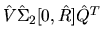
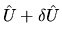
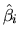
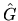

The GSVD algorithm used in LAPACK ([83,10,8]) is backward stable:
Let the computed GSVD of A and B be and . This is nearly the exact GSVD of A+E and B+F in the following sense. E and F are small:
there exist small , , and such that , , and are exactly orthogonal (or unitary):
and
is the exact GSVD of A+E and B+F. Here p(n) is a modestly growing function of n, and we take p(n)=1 in the above code fragment.
Letand
be the square roots of the diagonal entries of the exact and , and let and  the square roots of the diagonal entries of the computed and . Let
Then provided G and  have full rank n, one can show [96,82] that
In the code fragment we approximate the numerator of the last expression by and approximate the denominator by in order to compute SERRBD; STRCON returns an approximation RCOND to .
We assume that the rank r of G equals n, because otherwise the
 s and
s and  s are not well determined. For example, if
s are not well determined. For example, if
The reason the code fragment assumes  is that in this case
is
stored overwritten on A, and can be passed to STRCON in order to compute
RCOND. If ,
then the
first m rows of
are
stored in A, and the last n-m rows of
are stored in B. This
complicates the computation of RCOND: either
must be copied to
a single array before calling STRCON, or else the lower level subroutine SLACON
must be used with code capable of solving linear equations with
and
as coefficient matrices.
is that in this case
is
stored overwritten on A, and can be passed to STRCON in order to compute
RCOND. If ,
then the
first m rows of
are
stored in A, and the last n-m rows of
are stored in B. This
complicates the computation of RCOND: either
must be copied to
a single array before calling STRCON, or else the lower level subroutine SLACON
must be used with code capable of solving linear equations with
and
as coefficient matrices.